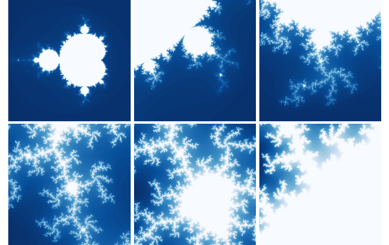

绘制Mandelbrot集合¶
相关文档： Mandelbrot集合
纯Python计算版本¶
# -*- coding: utf-8 -*-
import numpy as np
import pylab as pl
import time
from matplotlib import cm
def iter_point(c):
z = c
for i in xrange(1, 100): # 最多迭代100次
if abs(z)>2: break # 半径大于2则认为逃逸
z = z*z+c
return i # 返回迭代次数
def draw_mandelbrot(cx, cy, d):
"""
绘制点(cx, cy)附近正负d的范围的Mandelbrot
"""
x0, x1, y0, y1 = cx-d, cx+d, cy-d, cy+d
y, x = np.ogrid[y0:y1:200j, x0:x1:200j]
c = x + y*1j
start = time.clock()
mandelbrot = np.frompyfunc(iter_point,1,1)(c).astype(np.float)
print "time=",time.clock() - start
pl.imshow(mandelbrot, cmap=cm.Blues_r, extent=[x0,x1,y0,y1])
pl.gca().set_axis_off()
x,y = 0.27322626, 0.595153338
pl.subplot(231)
draw_mandelbrot(-0.5,0,1.5)
for i in range(2,7):
pl.subplot(230+i)
draw_mandelbrot(x, y, 0.2**(i-1))
pl.subplots_adjust(0.02, 0, 0.98, 1, 0.02, 0)
pl.show()
Weave版本¶
# -*- coding: utf-8 -*-
import numpy as np
import pylab as pl
import time
import scipy.weave as weave
from matplotlib import cm
def weave_iter_point(c):
code = """
std::complex<double> z;
int i;
z = c;
for(i=1;i<100;i++)
{
if(std::abs(z) > 2) break;
z = z*z+c;
}
return_val=i;
"""
f = weave.inline(code, ["c"], compiler="gcc")
return f
def draw_mandelbrot(cx, cy, d,N=200):
"""
绘制点(cx, cy)附近正负d的范围的Mandelbrot
"""
x0, x1, y0, y1 = cx-d, cx+d, cy-d, cy+d
y, x = np.ogrid[y0:y1:N*1j, x0:x1:N*1j]
c = x + y*1j
start = time.clock()
mandelbrot = np.frompyfunc(weave_iter_point,1,1)(c).astype(np.float)
print "time=",time.clock() - start
pl.imshow(mandelbrot, cmap=cm.Blues_r, extent=[x0,x1,y0,y1])
pl.gca().set_axis_off()
x,y = 0.27322626, 0.595153338
pl.subplot(231)
draw_mandelbrot(-0.5,0,1.5)
for i in range(2,7):
pl.subplot(230+i)
draw_mandelbrot(x, y, 0.2**(i-1))
pl.subplots_adjust(0.02, 0, 0.98, 1, 0.02, 0.02)
pl.show()
NumPy加速版本¶
# -*- coding: utf-8 -*-
import numpy as np
import pylab as pl
import time
from matplotlib import cm
def draw_mandelbrot(cx, cy, d, N=200):
"""
绘制点(cx, cy)附近正负d的范围的Mandelbrot
"""
global mandelbrot
x0, x1, y0, y1 = cx-d, cx+d, cy-d, cy+d
y, x = np.ogrid[y0:y1:N*1j, x0:x1:N*1j]
c = x + y*1j
# 创建X,Y轴的坐标数组
ix, iy = np.mgrid[0:N,0:N]
# 创建保存mandelbrot图的二维数组，缺省值为最大迭代次数
mandelbrot = np.ones(c.shape, dtype=np.int)*100
# 将数组都变成一维的
ix.shape = -1
iy.shape = -1
c.shape = -1
z = c.copy() # 从c开始迭代，因此开始的迭代次数为1
start = time.clock()
for i in xrange(1,100):
# 进行一次迭代
z *= z
z += c
# 找到所有结果逃逸了的点
tmp = np.abs(z) > 2.0
# 将这些逃逸点的迭代次数赋值给mandelbrot图
mandelbrot[ix[tmp], iy[tmp]] = i
# 找到所有没有逃逸的点
np.logical_not(tmp, tmp)
# 更新ix, iy, c, z只包含没有逃逸的点
ix,iy,c,z = ix[tmp], iy[tmp], c[tmp],z[tmp]
if len(z) == 0: break
print "time=",time.clock() - start
pl.imshow(mandelbrot, cmap=cm.Blues_r, extent=[x0,x1,y0,y1])
pl.gca().set_axis_off()
x,y = 0.27322626, 0.595153338
pl.subplot(231)
draw_mandelbrot(-0.5,0,1.5)
for i in range(2,7):
pl.subplot(230+i)
draw_mandelbrot(x, y, 0.2**(i-1))
pl.subplots_adjust(0.02, 0, 0.98, 1, 0.02, 0)
pl.show()
平滑版本¶

# -*- coding: utf-8 -*-
import numpy as np
import pylab as pl
from math import log
from matplotlib import cm
escape_radius = 10
iter_num = 20
def smooth_iter_point(c):
z = c
for i in xrange(1, iter_num):
if abs(z)>escape_radius: break
z = z*z+c
absz = abs(z)
if absz > 2.0:
mu = i - log(log(abs(z),2),2)
else:
mu = i
return mu # 返回正规化的迭代次数
def iter_point(c):
z = c
for i in xrange(1, iter_num):
if abs(z)>escape_radius: break
z = z*z+c
return i
def draw_mandelbrot(cx, cy, d, N=200):
global mandelbrot
"""
绘制点(cx, cy)附近正负d的范围的Mandelbrot
"""
x0, x1, y0, y1 = cx-d, cx+d, cy-d, cy+d
y, x = np.ogrid[y0:y1:N*1j, x0:x1:N*1j]
c = x + y*1j
mand = np.frompyfunc(iter_point,1,1)(c).astype(np.float)
smooth_mand = np.frompyfunc(smooth_iter_point,1,1)(c).astype(np.float)
pl.subplot(121)
pl.gca().set_axis_off()
pl.imshow(mand, cmap=cm.Blues_r, extent=[x0,x1,y0,y1])
pl.subplot(122)
pl.imshow(smooth_mand, cmap=cm.Blues_r, extent=[x0,x1,y0,y1])
pl.gca().set_axis_off()
draw_mandelbrot(-0.5,0,1.5,300)
pl.subplots_adjust(0.02, 0, 0.98, 1, 0.02, 0)
pl.show()